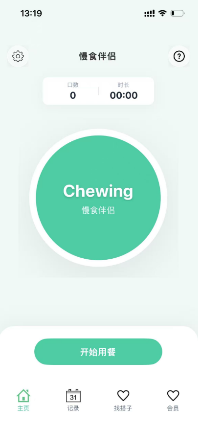
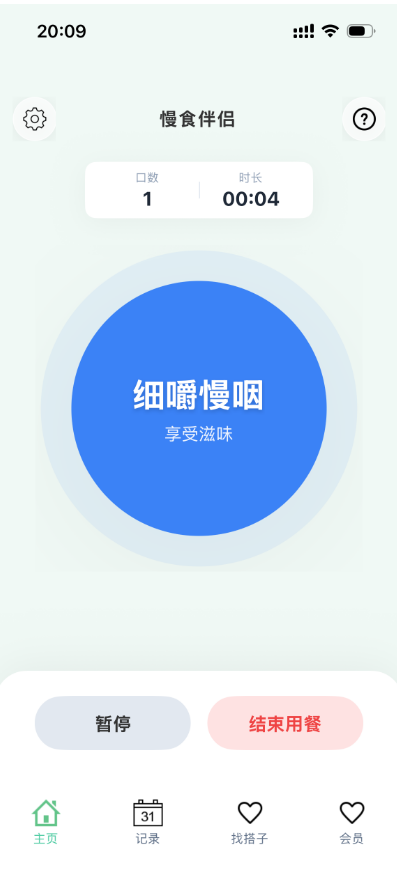
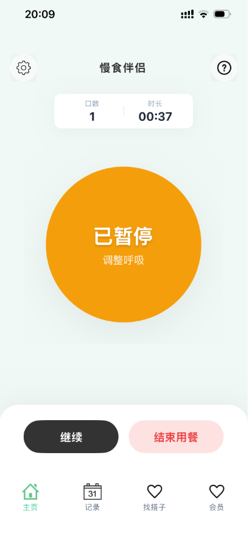

智能细嚼慢咽引导工具，像吃饭节拍器一样养成减脂好习惯。



将用餐拆解为“放入口中-专注咀嚼-吞咽休息”三个科学相位。通过绿圈、蓝圈、橙圈的视觉脉动与震动反馈，强制让您的进食节奏变慢。
无需时刻盯着手机。手腕上的隐形震动提醒，能更私密、无感地提醒您放慢速度，无论是商务应酬还是家庭聚餐都能从容应对。
智能记录每餐的咀嚼时长与频率。通过长期的热力图分析，见证您的饮食习惯如何从“快餐式”转化为“享受式”。
慢食伴侣是针对追求纯粹“节拍引导”的用户设计的进阶版工具。我们强调极致的 UI 极简主义、Apple Watch 全自动化震动反馈，以及不记录卡路里只记录“节奏”的健康哲学。
延长咀嚼时间不仅能通过唾液淀粉酶让食物变甜，更重要的是让大脑饱腹感信号有足够的时间（通常20分钟）产生作用，达到“吃得慢，所以吃得少”的效果。